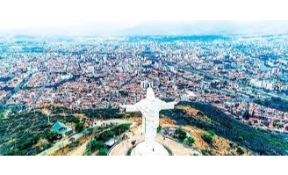

Los lugares turisticos que no te puedes perder
¿Que hacer en Bolivia?
Bolivia es un país de contrastes imposibles y una riqueza natural y cultural difícil de encontrar en otro lugar. Durante los 20 días en que hemos recorrido el país (Agosto 2017), hemos atravesado paisajes que podrían pertenecer a 7 u 8 países diferentes, o directamente que parecen de otro planeta. Y lo más sorprendente: no es un país masificado por el turismo. Quizá en algunos puntos de la frontera con Chile o Perú se concentra más, pero por lo general, es un país que aún se puede disfrutar sin sufrir las masas del Machu Picchu.
Salar de Uyuni
El salar de Uyuni es el mayor desierto de sal continuo y alto del mundo, con una superficie de 10 582 km² (o 4085 millas cuadradas).1 Está situado a unos 3650 msnm en el suroeste de Bolivia, en la provincia de Daniel Campos, en el departamento de Potosí, dentro de la región altiplánica de la cordillera de los Andes.
Ver másLago Titicaca
De azul intenso y brillante, el Titicaca es el lago navegable más alto del mundo y un lugar sagrado para la extinta civilización Inca. Según cuenta la leyenda, fue en este lugar donde se creó el mundo, cuando el dios Viracocha salió del lago y creó el sol, las estrellas y las primeras personas.
Ver másCristo de la concordia
Encontraras variedad de hoteles y alojamientos. Entre ellos destaca el insólito hotel “Palacio de Sal”, el primero en su clase, construido íntegramente de sal y en perfecta armonía con el paisaje que lo rodea, el lugar perfecto para recargarse de una energía especial, aquella que sólo la naturaleza puede dar.
Ver másValle de la luna

El Valle de la Luna es una sección donde la erosión ha consumido la parte superior de una montaña. No siendo el suelo sólido, arcilla en vez de roca, con el transcurso de los siglos los elementos han creado una obra de arte algo diferente. Es como un desierto de estalagmitas.
Ver másCarnaval de Oruro
El Carnaval de Oruro es un evento folclórico y cultural en la ciudad de Oruro, así como la máxima representación de los carnavales en Bolivia, “Obra Maestra del Patrimonio Oral e Intangible de la Humanidad” (Unesco).
Ver másVilla Tunari
Encontraras variedad de hoteles y alojamientos. Entre ellos destaca el insólito hotel “Palacio de Sal”, el primero en su clase, construido íntegramente de sal y en perfecta armonía con el paisaje que lo rodea, el lugar perfecto para recargarse de una energía especial, aquella que sólo la naturaleza puede dar.
Ver más